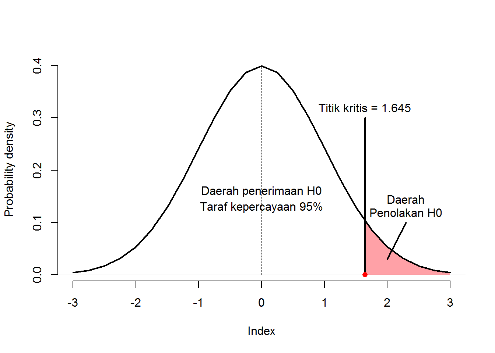
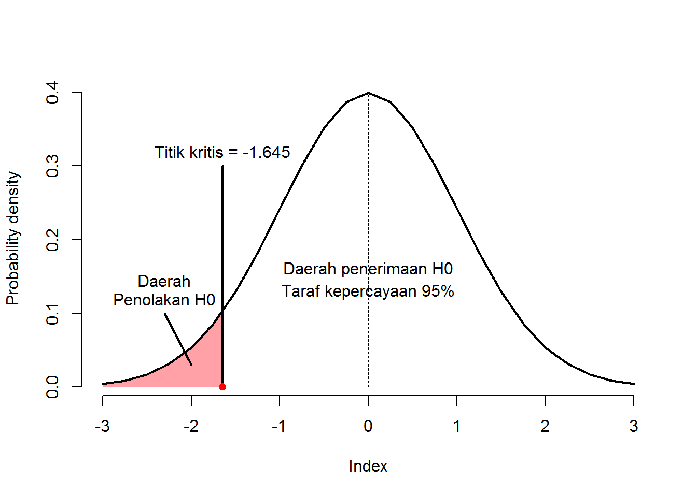

Bagian 2 Uji 2 Sampel Saling Bebas
2.1 Tujuan
- Mahasiswa mampu memahami konsep dasar pengujian 2 sampel independen
- Mahasiswa mampu melakukan pengujian 2 sampel independen secara manual
- Mahasiswa mampu melakukan pengujian 2 sampel independen menggunakan aplikasi pengolah data SPSS dan R
2.2 Dasar Teori
Terkadang kita ingin mengetahui apakah sebuah kelompok data (sampel data) memiliki nilai rata-rata yang sama dengan kelompok data yang lain. Tentu kata “sama” dalam hal ini tidak memiliki arti sama persis sebab hal ini sangat jarang terjadi. Akan selalu ada kesalahan yang dapat ditolernasi disetiap pengujian.
Andaikan dari 10 sampel mahasiswa laki-laki diperoleh rata-rata tinggi badan = 168,5 dan dari 10 sampel mahasiswa perempuan diperoleh tinggi badan = 167,2. Apakah dapat disimpulkan bahwa tinggi badan mahasiswa laki-laki = tinggi badan mahasiswa perempuan? Jika “ya”, maka apa dasar pengambilan kesimpulan tersebut?
Uji 2 sampel independen merupakan uji statistik yang digunakan untuk menguji nilai rata-rata dari 2 kelompok/sampel/populasi yang saling bebas. Terdapat 2 pengujian yang dapat dilakukan pada kasus ini, yang pertama adalah pengujian dengan mengganakan metode statistik parametrik yaitu Uji t 2 Sampel Independen dan pengujian dengan mengganakan metode statistik non-parametrik yaitu Uji Mann Whitney.
Berikut ini adalah contoh kasus 2 sampel independen:
- Kepala Dinas Kesehatan ingin menguji apakah ada perbedaan jumlah kunjungan pada puskesmas yang berada di daerah perkotaan dan daerah pedesaan.
- Seorang peneliti menduga bahwa terdapat perbedaan kandungan gizi antara roti tawar yang biasa dengan roti tawar yang telah ditambahkan dengan tepung kelor.
- Perusahaan farmasi A meyakini bahwa produk obat penurun gula darah yang mereka produksi dapat menurunkan kadar gula lebih baik daripada produk dari perusahaan farmasi B
2.2.1 Hipotesis Pengujian
Terdapat 3 hipotesis yang dapat digunakan dalam melakukan pengujian dengan menggunakan Uji t 2 Sampel Independen.
Hipotesis Satu Arah Kanan
Hipotesis ini digunakan untuk menguji apakah rata-rata dari suatu sampel/kelompok lebih besar dari sampel/kelompok yang lain. Hipotesis ditulis sebagai berikut:
\(H_0 : \mu_1-\mu_2 \leq d_0\)
\(H_1 : \mu_1-\mu_2 > d_0\)
Apabila \(d_0 = 0\), maka hipotesis akan menjadi:
\(H_0 : \mu_1 \leq \mu_2\)
\(H_1 : \mu_1 > \mu_2\)
Daerah penolakan dan penerimaan \(H_0\) pada \(\alpha = 5\%\) dan \(df = 10000\) dapat dilihat pada gambar berikut:

Penolakan \(H_0\) dilakukan apabila nilai \(t_{hitung}\) berada pada daerah penolakan H0 (\(t_{hitung}\) > nilai kritis \(1.645\)).
Hipotesis Satu Arah Kiri
Hipotesis ini digunakan untuk menguji apakah rata-rata dari suatu sampel/kelompok lebih kecil dari sampel/kelompok yang lain. Hipotesis ditulis sebagai berikut:
\(H_0 : \mu_1-\mu_2 \geq d_0\)
\(H_1 : \mu_1-\mu_2 < d_0\)
Apabila \(d_0 = 0\), maka hipotesis akan menjadi:
\(H_0 : \mu_1 \geq \mu_2\)
\(H_1 : \mu_1 < \mu_2\)
Daerah penolakan dan penerimaan \(H_0\) pada \(\alpha = 5\%\) dan \(df = 10000\) dapat dilihat pada gambar berikut:

Penolakan \(H_0\) dilakukan apabila nilai \(t_{hitung}\) berada pada daerah penolakan H0 (\(t_{hitung}\) < nilai kritis \(-1.645\)).
Hipotesis Dua Arah
Hipotesis ini digunakan untuk menguji apakah rata-rata dari suatu sampel/kelompok berbeda (dapat lebih besar atau lebih kecil) dari sampel/kelompok yang lain. Hipotesis ditulis sebagai berikut:
\(H_0 : \mu_1-\mu_2 = d_0\)
\(H_1 : \mu_1-\mu_2 \neq d_0\)
Apabila \(d_0 = 0\), maka hipotesis akan menjadi:
\(H_0 : \mu_1 = \mu_2\)
\(H_1 : \mu_1 \neq \mu_2\)
Daerah penolakan dan penerimaan \(H_0\) pada \(\alpha = 5\%\) dan \(df = 10000\) dapat dilihat pada gambar berikut:

Penolakan \(H_0\) dilakukan apabila nilai \(t_{hitung}\) berada pada daerah penolakan H0 (\(t_{hitung}\) < nilai kritis \(-1.960\) bila \(t_{hitung}\) negatif atau \(t_{hitung}\) > nilai kritis \(1.960\) bila \(t_{hitung}\) positif).
2.2.2 Uji t 2 Sampel Independen
Uji t 2 Sampel Independen memiliki beberapa asumsi yang harus terpenuhi, yaitu:
- Sampel/kelompok diambil secara acak
- Sampel/kelompok independen
- Sampel/kelompok berasal dari populasi yang berdistribusi normal
- Memiliki varians antar sampel/kelompok yang sama (homogen)
Namun pada kasus kedua sampel tidak memiliki varians yang sama (homogen), uji dapat dilanjutkan dengan menggunakan derajat kebebasan yang berbeda.
Formula untuk Uji t 2 Sampel Independen (\(t_{hitung}\)) dengan asumsi varians antar kelompok sama ialah sebagai berikut (Bluman 2018): \[ t = \frac{(\bar{X_1}-\bar{X_2})-(\mu_1-\mu_2)}{\sqrt{\frac{\sigma_1^2}{n_1}+\frac{\sigma_2^2}{n_2}}} \] dimana:
- derajat kebebasan sama dengan \(n-1\) (pada kasus \(n_1\) dan \(n_2\) yang sama)
- pada kasus varians populasi (\(\sigma^2\)) tidak diketahui maka \(\sigma^2 = s^2 = \frac{\sum(x_i-\mu)}{n-1}\).
Selain itu, \(t_{hitung}\) juga dapat dihitung dengan formula berikut: \[ t = \frac{(\bar{X_1}-\bar{X_2})-(\mu_1-\mu_2)}{s_p\sqrt{\frac{1}{n_1}+\frac{1}{n_2}}} \] dimana \(s_p = \sqrt{\frac{(n_1-1)s^2_1+(n_2-1)s^2_2}{n_1+n_2-2}}\).
Apabila hasil pengujian varians dinyatakan bahwa kedua sampel/kelompok tidak memiliki varians yang sama (homogen), maka derajat kebebasan dihitung dengan formula berikut: \[ d.f = \frac{(s_1^2/n_1+s_2^2/n_2)^2}{(s_1^2/n_1)^2/(n_1-1)+(s_2^2/n_2)^2/(n_2-1)} \]
2.2.2.1 Contoh
Berikut adalah contoh-contoh pengujian dengan menggunakan Uji t 2 Sampel Independen
Kasus 1 Diketahui bahwa dalam 8 kali percobaan, rata-rata Ani dapat mengetik sebanyak 105 kata dengan standar deviasi 7 kata dalam waktu 1 menit. Dengan jumlah percobaan yang sama dengan Ani, Rudi dapat mengetik dengan rata-rata 115 kata dengan standar deviasi 10 dalam waktu 1 menit. Dengan menggunakan \(\alpha\) sebesar 5%, apakah dapat disimpulkan bahwa Rudi dapat mengetik lebih cepat daripada Ani? Varians antar kelompok diasumsikan homogen.
Jawab
| Statistik | Ani | Rudi |
|---|---|---|
| n | 8 | 8 |
| rata-rata | 105 | 115 |
| standar deviasi | 7 | 10 |
Langkah-langkah pengerjaan
- Tentukan hipotesis pengujian:
\(H_0 : \mu_1 \leq \mu_2\)
\(H_1 : \mu_1 > \mu_2\)
dimana \(\mu_1\) adalah rata-rata mengetik Rudi (populasi) dan \(\mu_2\) adalah rata-rata mengetik Ani (populasi) - Hitung derajat kebebasan \(dk = n - 1 = 8 - 1 = 7\).
- Tentukan nilai \(t_{tabel}\) dengan \(\alpha=0.05\) dan \(dk = 7\), sehingga \(t_{(0.05,7)} = 1,8946\).
- Hitung nilai \(t_{hitung}\) dengan menganggap bahwa \(\mu_1-\mu_2 = 0\), maka:
\[ t_{hitung} = \frac{(\bar{X_1}-\bar{X_2})}{\sqrt{\frac{s_1^2}{n_1}+\frac{s_2^2}{n_2}}} \] \[ t_{hitung} = \frac{(115-105)}{\sqrt{\frac{10^2}{8}+\frac{7^2}{8}}} = 2,32 \] - Bandingkan \(t_{hitung}\) dengan \(t_{tabel}\) (\(2,32 > 1,8946\)).
- Pengambilan keputusan: Tolak \(H_0\) (karena \(t_{hitung}\) lebih besar dari \(t_{tabel}\)).
Sehingga dapat disimpulkan bahwa dengan menggunakan \(\alpha = 5\%\) Rudi mengetik lebih cepat daripada Ani.
Kasus 2 Dekan Fakultas XX menyatakan bahwa tekanan darah pria lansia lebih rendah daripada wanita lansia. Penelitian dilakukan untuk menguji teori tersebut dengan mengambil 20 pria dan 20 wanita lansia dan diukur tekanan darahnya. Hasil pengukuran menunjukkan bahwa rata-rata tekanan dara pria lansia adalah 115,6 dengan simpanan baku 7,3. Sedangkan hasil pengukuran pada wanita lansia menunjukkan rata-rata tekanan darah sebesar 121,5 dengan simpangan baku 11,2. Berdasarkan data tersebut, tentukan apakah pernyataan Dekan dapat dibenarkan dengan menggunakan \(\alpha=0.05\)?
Jawab
| Statistik | Pria | Wanita |
|---|---|---|
| n | 20.0 | 20.0 |
| rata-rata | 115.6 | 121.5 |
| standar deviasi | 7.3 | 11.2 |
Langkah-langkah pengerjaan
- Tentukan hipotesis pengujian:
\(H_0 : \mu_1 \geq \mu_2\)
\(H_1 : \mu_1 < \mu_2\)
dimana \(\mu_1\) adalah rata-rata pria lansia (populasi) dan \(\mu_2\) adalah rata-rata wanita lansia (populasi) - Hitung derajat kebebasan \(dk = n - 1 = 20 - 1 = 19\).
- Tentukan nilai \(t_{tabel}\) dengan \(\alpha=0.05\) dan \(dk = 19\), sehingga \(t_{(0.05,19)} = -1,7291\).
- Hitung nilai \(t_{hitung}\) dengan menganggap bahwa \(\mu_1-\mu_2 = 0\), maka:
\[ t_{hitung} = \frac{(\bar{X_1}-\bar{X_2})}{\sqrt{\frac{s_1^2}{n_1}+\frac{s_2^2}{n_2}}} \] \[ t_{hitung} = \frac{(115.6-121.5)}{\sqrt{\frac{7.3^2}{20}+\frac{11.2^2}{20}}} = -6,44 \] - Bandingkan \(t_{hitung}\) dengan \(t_{tabel}\) (\(-6,44<-1,7291\)).
- Pengambilan keputusan: Tolak \(H_0\) (karena \(t_{hitung}\) lebih kecil dari \(t_{tabel}\)).
Sehingga dapat disimpulkan bahwa dengan menggunakan \(\alpha = 5\%\) pernyataan Dekan Fakultas XX adalah benar.
Kasus 3 Data berikut merupakan hasil penurunan berat badan dengan menggunakan Metode Diet A pada 10 responden wanita di wilayah perkotaan dan pedesaan.
| kota | desa |
|---|---|
| 3 | 5 |
| 3 | 6 |
| 5 | 6 |
| 4 | 5 |
| 5 | 5 |
| 3 | 5 |
| 3 | 6 |
| 4 | 7 |
| 2 | 6 |
| 2 | 5 |
Dengan menggunakan \(\alpha\) = 5%, tentukan apakah ada perbedaan penurunan berat badan pada wanita di perkotaan dan pedesaan jika melakukan diet dengan menggunakan Metode Diet A?
Jawab
| Statistik | kota | desa |
|---|---|---|
| n | 10.00 | 10.0 |
| rata-rata | 3.40 | 5.6 |
| standar deviasi | 1.07 | 0.7 |
Langkah-langkah pengerjaan
- Tentukan hipotesis pengujian:
\(H_0 : \mu_1 = \mu_2\)
\(H_1 : \mu_1 \neq \mu_2\)
dimana \(\mu_1\) adalah rata-rata penurunan berat badan wanita di kota (populasi) dan \(\mu_2\) adalah rata-rata penurunan berat badan wanita di desa (populasi) - Hitung derajat kebebasan \(dk = n - 1 = 10 - 1 = 9\).
- Tentukan nilai \(t_{tabel}\) dengan \(\alpha=0.05/2=0.025\) dan \(dk = 9\), sehingga \(t_{(0.025,9)} = -2,2622\) atau \(t_{(0.975,9)} = 2,2622\).
- Hitung nilai \(t_{hitung}\) dengan menganggap bahwa \(\mu_1-\mu_2 = 0\), maka:
\[ t_{hitung} = \frac{(\bar{X_1}-\bar{X_2})}{\sqrt{\frac{s_1^2}{n_1}+\frac{s_2^2}{n_2}}} \] \[ t_{hitung} = \frac{(3.4-5.6)}{\sqrt{\frac{1.07^2}{10}+\frac{0.7^2}{10}}} = -5.44 \] - Bandingkan \(t_{hitung}\) dengan \(t_{tabel}\) (karena \(t_{hitung}\) negatif, maka bandingkan dengan nilai \(t_{tabel}\) yang negatif juga, \(-5,44<-2,2622\)).
- Pengambilan keputusan: Tolak \(H_0\) (karena \(t_{hitung}\) lebih kecil dari \(t_{tabel}\)).
Sehingga dapat disimpulkan bahwa dengan menggunakan \(\alpha = 5\%\) terdapat perbedaan penurunan berat badan pada wanita yang melakukan diet dengan menggunakan Metode Diet A di pedesaan dan perkotaan.
2.2.3 Uji Mann Whitney
Sering kali data 2 sampel/kelompok saling bebas yang kita temui tidak memenuhi asumsi-asumsi yang diberikan pada Uji t 2 Sampel Independen. Hal ini menyebabkan pengujian tidak dapat diteruskan karena akan meningkatkan kesalahan dalam pengambilan keputusan. Oleh karena itu perlu ada perlakuan/cara lain agar pengujian dapat tetap dilakukan. XXXXXXXXXXXXXXXXXXXXXXXXXXXXXXXXXXXXXXXXXXXXXXXXXXXXXXXXXXXXXXXXXXXXXXXXXXXXXXXXXXXXXXXXXXXXXXXXXXXXXXXXXXXXXXXXXXXXXXXXXXXXXXXXXXXXXXXXXXXXXXXXXXXXXXXXXXXXXXXXXXXXXXXXXXXXXXXXXXXXXXXXXXXXXXXXXXXXXXXXXXXXXXXXXXXXXXXXXXXXXXXXXXXXXXXXXXXXXXXXXXXXXXXXXXXXXXXXXXXX
Uji Mann Whitney merupakan metode statistik non parametrik yang digunakan untuk melakukan pengujian terhadap 2 sampel yang independen. Uji Mann Whitney ini sama dengan Wilcoxon Rank Sum Test (Chalmer 2019), sehingga tak perlu khawatir apabila tidak menemukan istilah Mann Whitney pada rujukan yang kita gunakan. Sesuai dengan namanya, Wilcoxon Rank Sum Test menggunakan ranking dari data yang kita miliki. Terdapat 2 asumsi yang harus dipenuhi, yaitu:
- Sampel diambil secara acak dan bebas antar data,
- Minimal ukuran sampel yang digunakan adalah 10 (\(n \geq 10\)). (Bluman 2018)
Berikut adalah formula Uji Wilcoxon Rank Sum: \[ z = \frac{R-\mu_R}{\sigma_R} \] dimana:
- \(\mu_R=\frac{n_1(n_1+n_2+1)}{2}\)
- \(\sigma_R=\sqrt{\frac{n_1 n_2 (n_1+n_2+1)}{12}}\)
- \(R\) = jumlah ranking sampel yang memiliki nilai paling kecil
- \(n_1\) = ukuran sampel yang lebih kecil
- \(n_2\) = ukuran sampel yang lebih besar
- \(n_1 \geq 10\) dan \(n_2 \geq 10\)
Selanjutnya menggunakan tabel normal baku (\(Z\)) untuk menentukan daerah kritis.
Langkah-langkah pengerjaan dengan menggunakan metode Uji Wilcoxon Rank Sum akan dijelaskan dengan menggunakan contoh berikut:
Contoh Diambil 10 mahasiwa secara acak dari Kelas A dan Kelas B. Setiap mahasiswa diminta untuk menjelaskan cara belajar mereka dan rata-rata lama belajar mandiri dalam waktu 1 hari. Hasil pendataan menimbulkan kecurigaan bahwa terdapat lama belajar mandiri dari mahasiswa Kelas A dan Kelas B. Lama belajar mahasiswa dapat dilihat pada tabel berikut:
| A | B |
|---|---|
| 1.2 | 2.2 |
| 0.6 | 1.0 |
| 1.9 | 1.7 |
| 2.8 | 2.5 |
| 2.0 | 0.8 |
| 2.1 | 2.3 |
| 0.7 | 1.5 |
| 2.0 | 1.6 |
| 1.0 | 1.4 |
| 2.6 | 3.3 |
Pada \(\alpha\) = 5%, apakah terdapat perbedaan lama belajar pada mahasiswa Kelas A dan Kelas B?
Jawab
Langkah 1: Menentukan Hipotesis
Pertanyaan yang diberikan menunjukkan bahwa pengujian merupakan pengujian 2 arah, sehingga hipotesisnya adalah:
\(H_0: \mu_1 = \mu_2\) (Tidak terdapat perbedaan rata-rata lama belajar mahasiswa Kelas A dan Kelas B)
\(H_1: \mu_1 \neq \mu_2\) (Terdapat perbedaan rata-rata lama belajar mahasiswa Kelas A dan Kelas B)
Langkah 2: Menentukan nilai kritis
Karena pengujian 2 arah, maka \(\alpha = 0.05/2 = 0.025\), sehingga nilai kritis pada tabel \(Z\) adalah \(\pm 1.96\).
Hitung nilai \(z_{hitung}\)
- Gabungkan semua data dari kedua sampel lalu urutkan, jangan lupa untuk menandai data dari sampel/kelompok mana
| sampel | lama_belajar |
|---|---|
| A | 1.2 |
| A | 0.6 |
| A | 1.9 |
| A | 2.8 |
| A | 2.0 |
| A | 2.1 |
| A | 0.7 |
| A | 2.0 |
| A | 1.0 |
| A | 2.6 |
| B | 2.2 |
| B | 1.0 |
| B | 1.7 |
| B | 2.5 |
| B | 0.8 |
| B | 2.3 |
| B | 1.5 |
| B | 1.6 |
| B | 1.4 |
| B | 3.3 |
| sampel | lama_belajar | |
|---|---|---|
| 2 | A | 0.6 |
| 7 | A | 0.7 |
| 15 | B | 0.8 |
| 9 | A | 1.0 |
| 12 | B | 1.0 |
| 1 | A | 1.2 |
| 19 | B | 1.4 |
| 17 | B | 1.5 |
| 18 | B | 1.6 |
| 13 | B | 1.7 |
| 3 | A | 1.9 |
| 5 | A | 2.0 |
| 8 | A | 2.0 |
| 6 | A | 2.1 |
| 11 | B | 2.2 |
| 16 | B | 2.3 |
| 14 | B | 2.5 |
| 10 | A | 2.6 |
| 4 | A | 2.8 |
| 20 | B | 3.3 |
- Berikan ranking 1 pada nilai paling kecil dan ranking \(n_1+n_2\) pada nilai paling besar. Apabila terdapat data yang bernilai sama, maka ranking diperoleh dari rata-rata dari ranking kedua data tersebut
| sampel | lama_belajar | rank | |
|---|---|---|---|
| 2 | A | 0.6 | 1 |
| 7 | A | 0.7 | 2 |
| 15 | B | 0.8 | 3 |
| 9 | A | 1.0 | 4 |
| 12 | B | 1.0 | 5 |
| 1 | A | 1.2 | 6 |
| 19 | B | 1.4 | 7 |
| 17 | B | 1.5 | 8 |
| 18 | B | 1.6 | 9 |
| 13 | B | 1.7 | 10 |
| 3 | A | 1.9 | 11 |
| 5 | A | 2.0 | 12 |
| 8 | A | 2.0 | 13 |
| 6 | A | 2.1 | 14 |
| 11 | B | 2.2 | 15 |
| 16 | B | 2.3 | 16 |
| 14 | B | 2.5 | 17 |
| 10 | A | 2.6 | 18 |
| 4 | A | 2.8 | 19 |
| 20 | B | 3.3 | 20 |
| sampel | lama_belajar | rank | new_rank | |
|---|---|---|---|---|
| 2 | A | 0.6 | 1 | 1.0 |
| 7 | A | 0.7 | 2 | 2.0 |
| 15 | B | 0.8 | 3 | 3.0 |
| 9 | A | 1.0 | 4 | 4.5 |
| 12 | B | 1.0 | 5 | 4.5 |
| 1 | A | 1.2 | 6 | 6.0 |
| 19 | B | 1.4 | 7 | 7.0 |
| 17 | B | 1.5 | 8 | 8.0 |
| 18 | B | 1.6 | 9 | 9.0 |
| 13 | B | 1.7 | 10 | 10.0 |
| 3 | A | 1.9 | 11 | 11.0 |
| 5 | A | 2.0 | 12 | 12.5 |
| 8 | A | 2.0 | 13 | 12.5 |
| 6 | A | 2.1 | 14 | 14.0 |
| 11 | B | 2.2 | 15 | 15.0 |
| 16 | B | 2.3 | 16 | 16.0 |
| 14 | B | 2.5 | 17 | 17.0 |
| 10 | A | 2.6 | 18 | 18.0 |
| 4 | A | 2.8 | 19 | 19.0 |
| 20 | B | 3.3 | 20 | 20.0 |
- Jumlahkan semua ranking pada masing-masing sampel/kelompok lalu pilih hasil yang paling kecil
| A | B |
|---|---|
| 1.0 | 3.0 |
| 2.0 | 4.5 |
| 4.5 | 7.0 |
| 6.0 | 8.0 |
| 11.0 | 9.0 |
| 12.5 | 10.0 |
| 12.5 | 15.0 |
| 14.0 | 16.0 |
| 18.0 | 17.0 |
| 19.0 | 20.0 |
\[ R_A = 1+2+4.5+6+11+12.5+12.5+14+18+19=100.5 \] \[ R_B = 3+4.5+7+8+9+10+15+16+17+20=109.5 \] Nilai \(R\) yang akan kita gunakan adalah nilai yang paling kecil diantara \(R_A\) dan \(R_B\). \(R = R_A\)
Substitusikan pada formula yang telah diberikan \[\mu_R=\frac{10 \times (10+10+1)}{2}=105\] \[\sigma_R=\sqrt{\frac{10 \times 10 \times (10+10+1)}{12}}=13.22876\] \[ z_{hitung} = \frac{100.5-105}{12.22876}=-0.3402 \]
Pengambilan keputusan.
Nilai \(z_{hitung}\) lebih besar dari nilai kritis (\(-1.96<-0.3402\)), maka keputusannya ialah tolak \(H_0\) yang berarti tidak ada perbedaan rata-rata waktu belajar mandiri dari mahasiswa Kelas A dan Kelas B.
2.3 Uji dengan SPSS
2.4 Uji dengan Program R
References
Bluman, Allan G. 2018. Elementary Statistics: A Step by Step Approach. 10th ed. New York: McGraw-Hill Education.
Chalmer, Bruce J. 2019. Understanding Statistics. Boca Raton: CRC Press.